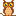

Icon Library Page 43
The icons listed here have been 'described' using multiple types of neural networks. Much of the data is junk. The label is the most likely object in the image, however none of this has been verified by a human. When this page is re-generated the labeling might change.
The best way to use this page is to use the ctrl+f search function.
Page Index
[1] [2] [3] [4] [5] [6] [7] [8] [9] [10] [11] [12] [13] [14] [15] [16] [17] [18] [19] [20] [21] [22] [23] [24] [25] [26] [27] [28] [29] [30] [31] [32] [33] [34] [35] [36] [37] [38] [39] [40] [41] [42] [43] [44] [45] [46] [47] [48] [49] [50] [51] [52] [53] [54] [55] [56] [57] [58] [59] [60] [61] [62] [63] [64] [65] [66] [67]
| image | labels |
|---|---|
| pill bottle, person, switch, cleaver, cleaver, meat cleaver, chopper, cleaver, meat cleaver, chopper | |
| sunscreen, person, Band Aid, binder, web site, website, internet site, site, cleaver, meat cleaver, chopper | |
| whistle, phone, Granny Smith, Granny Smith, loupe, jeweler's loupe, sunscreen, sunblock, sun blocker | |
| panpipe, person, panpipe, panpipe, panpipe, pandean pipe, syrinx, ski | |
| bearskin, person, scoreboard, sunscreen, lighter, light, igniter, ignitor, lighter, light, igniter, ignitor | |
| sunscreen, person, sunscreen, whistle, nipple, sunscreen, sunblock, sun blocker | |
| whiskey jug, tree, sunscreen, panpipe, panpipe, pandean pipe, syrinx, sunscreen, sunblock, sun blocker | |
| stopwatch, person, stopwatch, frying pan, stopwatch, stop watch, loupe, jeweler's loupe | |
| digital clock, phone, sunscreen, sunscreen, safety pin, cassette | |
| hourglass, person, digital watch, panpipe, pick, plectrum, plectron, stopwatch, stop watch | |
| hatchet, person, loupe, screen, web site, website, internet site, site, loupe, jeweler's loupe | |
| panpipe, person, panpipe, loupe, pick, plectrum, plectron, panpipe, pandean pipe, syrinx | |
| digital watch, person, pick, pick, pick, plectrum, plectron, pick, plectrum, plectron | |
| digital clock, person, Band Aid, whistle, Band Aid, Band Aid | |
| digital clock, person, Band Aid, whistle, web site, website, internet site, site, sunscreen, sunblock, sun blocker | |
| sunscreen, person, Band Aid, Band Aid, Band Aid, sunscreen, sunblock, sun blocker | |
| whistle, person, binder, binder, pick, plectrum, plectron, letter opener, paper knife, paperknife | |
| power drill, person, power drill, power drill, power drill, can opener, tin opener | |
| sunscreen, phone, sunscreen, sunscreen, nipple, sunscreen, sunblock, sun blocker | |
| digital clock, person, Band Aid, whistle, safety pin, cassette | |
| slot, sun, analog clock, stopwatch, bearskin, busby, shako, packet | |
| spotlight, spaceship, planetarium, ocarina, theater curtain, theatre curtain, Petri dish | |
| cleaver, person, cleaver, digital clock, sunscreen, sunblock, sun blocker, hair spray | |
| web site, person, hair spray, digital clock, hair spray, hair spray | |
| screen, person, theater curtain, analog clock, hair spray, hair spray | |
| switch, person, stopwatch, hourglass, stopwatch, stop watch, stopwatch, stop watch | |
| dugong, sun, grey whale, dugong, alp, dugong, Dugong dugon | |
| rapeseed, sun, sunscreen, rock beauty, gibbon, Hylobates lar, whistle | |
| whistle, spaceship, hair spray, whistle, screwdriver, ski | |
| digital clock, person, scoreboard, binder, binder, ring-binder, binder, ring-binder | |
| spatula, person, web site, safety pin, web site, website, internet site, site, web site, website, internet site, site | |
| screen, spaceship, hand-held computer, digital clock, hair spray, analog clock | |
| spatula, person, web site, safety pin, web site, website, internet site, site, web site, website, internet site, site | |
| digital clock, person, Band Aid, screen, pick, plectrum, plectron, screen, CRT screen | |
| spotlight, spaceship, nematode, ocarina, ocarina, sweet potato, ocarina, sweet potato | |
| spatula, person, web site, safety pin, stopwatch, stop watch, web site, website, internet site, site | |
| spotlight, spaceship, nematode, ocarina, ocarina, sweet potato, ocarina, sweet potato | |
| spatula, person, web site, safety pin, web site, website, internet site, site, web site, website, internet site, site | |
| screen, tree, analog clock, analog clock, analog clock, analog clock | |
| spotlight, spaceship, theater curtain, ocarina, theater curtain, theatre curtain, theater curtain, theatre curtain | |
| switch, person, screen, sunscreen, stopwatch, stop watch, sunscreen, sunblock, sun blocker | |
| digital clock, dog, digital watch, switch, analog clock, remote control, remote | |
| hair spray, dog, sunscreen, sunscreen, golden retriever, packet | |
| whistle, person, maraca, bearskin, bearskin, busby, shako, stopwatch, stop watch | |
| ocarina, person, nipple, ocarina, ballpoint, ballpoint pen, ballpen, Biro, ocarina, sweet potato | |
| digital watch, person, combination lock, sunscreen, stopwatch, stop watch, packet | |
| combination lock, person, analog clock, remote control, lighter, light, igniter, ignitor, sunscreen, sunblock, sun blocker | |
| switch, person, sunscreen, sunscreen, panpipe, pandean pipe, syrinx, stopwatch, stop watch | |
| pool table, tree, thresher, whistle, rock beauty, Holocanthus tricolor, thresher, thrasher, threshing machine | |
| digital clock, tree, whistle, whistle, web site, website, internet site, site, screen, CRT screen | |
| analog clock, person, analog clock, analog clock, analog clock, analog clock | |
| fox squirrel, cat, fox squirrel, lesser panda, hare, fox squirrel, eastern fox squirrel, Sciurus niger | |
| hourglass, person, ocarina, ocarina, gibbon, Hylobates lar, jersey, T-shirt, tee shirt | |
| chain saw, phone, stopwatch, Madagascar cat, chain saw, chainsaw, chain saw, chainsaw | |
|  | slot, person, prayer rug, prayer rug, slot, one-armed bandit, prayer rug, prayer mat |
| digital watch, person, stopwatch, loupe, stopwatch, stop watch, stopwatch, stop watch | |
| espresso maker, person, espresso maker, hair spray, spatula, oboe, hautboy, hautbois | |
| ocarina, person, otterhound, neck brace, jersey, T-shirt, tee shirt, langur | |
| digital clock, person, chain saw, ping-pong ball, chain saw, chainsaw, chain saw, chainsaw | |
| Windsor tie, person, Windsor tie, oboe, grey whale, gray whale, devilfish, Eschrichtius gibbosus, Eschrichtius robustus, revolver, six-gun, six-shooter | |
| lotion, tree, Band Aid, croquet ball, three-toed sloth, ai, Bradypus tridactylus, analog clock | |
| switch, person, whistle, nail, whistle, guillotine | |
| sunscreen, person, marmoset, sunscreen, jersey, T-shirt, tee shirt, ocarina, sweet potato | |
| whistle, sun, eggnog, goldfish, digital clock, packet | |
| digital clock, person, analog clock, digital clock, stopwatch, stop watch, punching bag, punch bag, punching ball, punchball | |
| chain saw, person, chain saw, spatula, pick, plectrum, plectron, chain saw, chainsaw | |
| barometer, person, digital watch, knee pad, pick, plectrum, plectron, stopwatch, stop watch | |
| pedestal, person, croquet ball, sunscreen, jersey, T-shirt, tee shirt, hair spray | |
| oil filter, person, combination lock, sunscreen, pick, plectrum, plectron, chain saw, chainsaw | |
| thresher, person, panpipe, whistle, spaghetti squash, panpipe, pandean pipe, syrinx | |
| hourglass, person, jersey, punching bag, jersey, T-shirt, tee shirt, hourglass | |
| bearskin, phone, waffle iron, whiskey jug, bulletproof vest, drum, membranophone, tympan | |
| rock beauty, sun, safety pin, rock beauty, pick, plectrum, plectron, pick, plectrum, plectron | |
| switch, dog, ocarina, ocarina, guillotine, jersey, T-shirt, tee shirt | |
| monastery, person, lotion, bearskin, bearskin, busby, shako, espresso maker | |
| can opener, person, chain saw, analog clock, pick, plectrum, plectron, ski | |
| panpipe, phone, panpipe, face powder, panpipe, pandean pipe, syrinx, chain saw, chainsaw | |
| lotion, person, whistle, digital clock, chain saw, chainsaw, chain saw, chainsaw | |
| moving van, phone, thresher, oil filter, whistle, thresher, thrasher, threshing machine | |
| rock beauty, phone, bolo tie, Windsor tie, comic book, bolo tie, bolo, bola tie, bola | |
| turnstile, person, guillotine, screen, guillotine, assault rifle, assault gun | |
| velvet, tree, bolo tie, indri, gong, tam-tam, combination lock | |
| pedestal, person, chain saw, maraca, letter opener, paper knife, paperknife, thresher, thrasher, threshing machine | |
| slot, person, slot, scoreboard, pick, plectrum, plectron, slot, one-armed bandit | |
| digital clock, person, scoreboard, digital clock, chain saw, chainsaw, chain saw, chainsaw | |
| panpipe, phone, panpipe, panpipe, panpipe, pandean pipe, syrinx, panpipe, pandean pipe, syrinx | |
| eggnog, sun, table lamp, table lamp, spotlight, spot, power drill | |
| pick, person, ocarina, analog clock, hand-held computer, hand-held microcomputer, packet | |
| chain saw, phone, digital watch, lotion, chain saw, chainsaw, thresher, thrasher, threshing machine | |
| lotion, person, pool table, oil filter, pickelhaube, chain saw, chainsaw | |
| digital clock, person, wall clock, analog clock, Windsor tie, gong, tam-tam | |
| screen, tree, rock beauty, rock beauty, pick, plectrum, plectron, rock beauty, Holocanthus tricolor | |
| lotion, flower, thresher, strawberry, packet, lotion | |
| Windsor tie, tree, hatchet, hatchet, hourglass, chain saw, chainsaw | |
| panpipe, tree, screw, hatchet, hatchet, bassoon | |
| digital clock, person, digital clock, digital clock, digital clock, scoreboard | |
| ocarina, person, oil filter, nipple, comic book, golden retriever | |
| hourglass, person, plunger, plunger, plunger, plumber's helper, analog clock | |
| power drill, person, chain saw, power drill, whistle, power drill | |
| eggnog, person, isopod, eggnog, ocarina, sweet potato, gong, tam-tam |